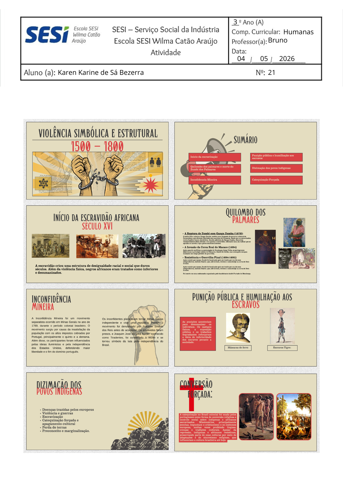

Mapa mental Nova Ordem Mundial (16/04)

A influência das tecnologias digitais em crises e movimentos sociais (20/04)

“No século XXI, quem controla a informação, controla o mundo.” (28/04)

Slides sobre Raízes históricas da violência estrutural e simbólica no Brasil (04/05)

Texto dissertativo-argumentativo (08/06)